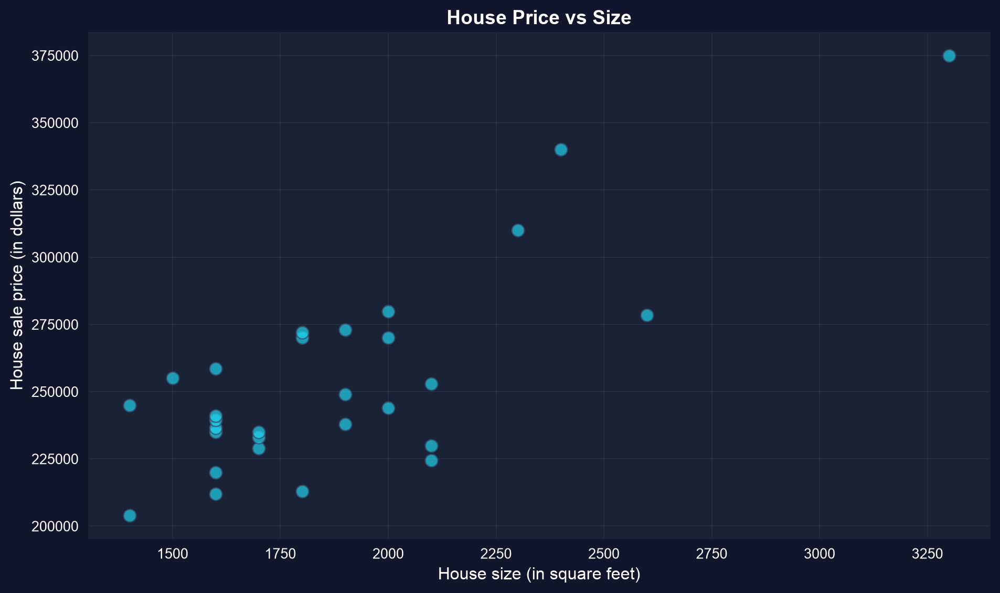
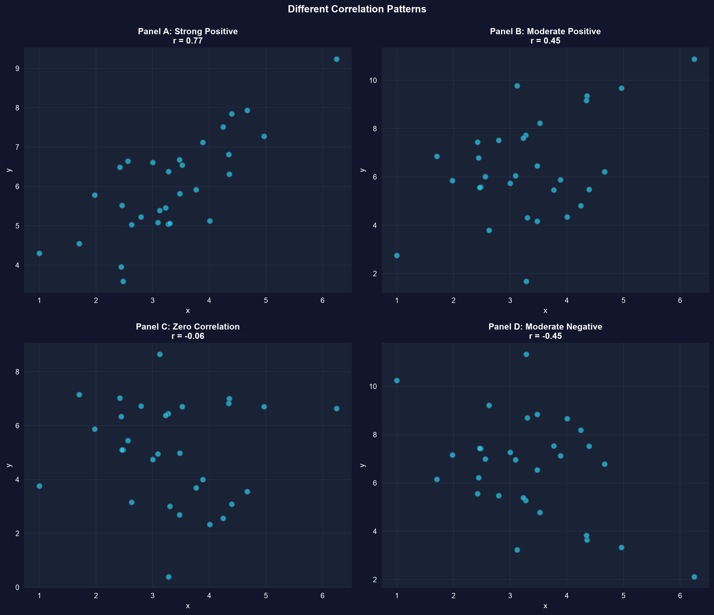
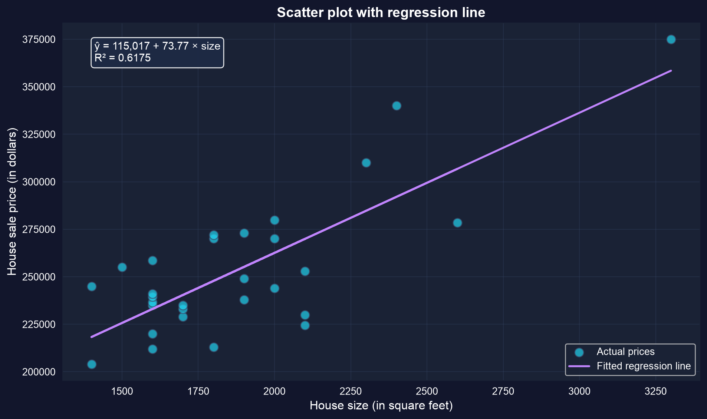
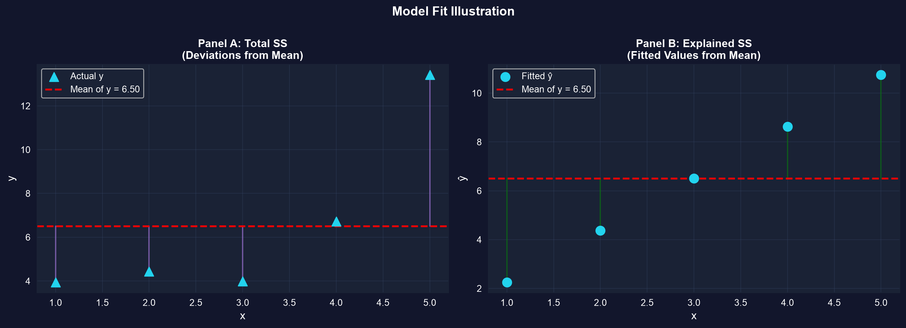
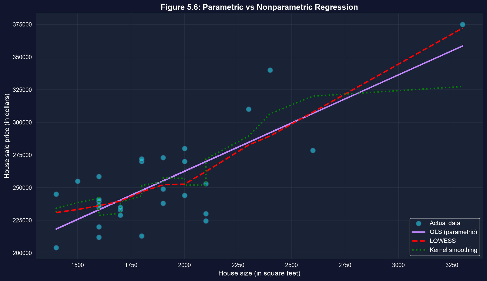

Act I · The tension
A dataset of house sales: for each house we see two numbers — its size and its price.
Eyeballing one house tells us nothing. The relationship between the two columns is the story — and we want to measure it, not just sense it.
Association — do \(x\) and \(y\) tend to move together, and in which direction?
Correlation \(r\) — a single, unit-free number in \([-1, 1]\) for the strength of a linear link.
Regression — a line \(\hat{y} = b_1 + b_2 x\) that predicts \(y\) from \(x\).
Summarizing a relationship means turning a cloud of points into a direction, a number, and a line.
Act II · The investigation

Each dot is a house. The upward drift is the association; the scatter around it is everything size doesn’t explain.
A scatterplot is the first summary of bivariate data — direction and spread, before any number.
import pandas as pd # tabular data
import matplotlib.pyplot as plt # plotting
url = "https://raw.githubusercontent.com/quarcs-lab/data-open/master/AED/AED_HOUSE.DTA"
houses = pd.read_stata(url) # load the 29 Davis, CA house sales
fig, ax = plt.subplots(figsize=(10, 6)) # create one figure + axes
ax.scatter(houses["size"], houses["price"], # x = size, y = price
s=80, alpha=0.7, color="#22d3ee") # marker size, transparency, colour
plt.show() # render the scatter plotCovariance says which way; correlation says how strongly — on a scale anyone can read.

Same idea, four strengths: strong, moderate, none, and negative. Correlation ranks the first three by how tightly points hug a line.
\(r\) near \(\pm 1\) means a tight line; \(r \approx 0\) means no linear link — not necessarily no link at all.
import pandas as pd # tabular data
url = "https://raw.githubusercontent.com/quarcs-lab/data-open/master/AED/AED_HOUSE.DTA"
houses = pd.read_stata(url) # load the 29 Davis, CA house sales
cov = houses[["price", "size"]].cov() # covariance matrix (carries units: $ × sq ft)
corr = houses[["price", "size"]].corr() # correlation matrix (unit-free, in −1…1)
r = corr.loc["price", "size"] # pull out the single correlation number
print(f"r = {r:.4f}") # → r = 0.7858\[\hat{y} = b_1 + b_2\, x\]
\(b_1\) is the intercept (predicted \(y\) when \(x = 0\)); \(b_2\) is the slope — the predicted change in \(y\) for a one-unit increase in \(x\). OLS picks \(b_1, b_2\) to minimize the sum of squared residuals.

The fitted line: ŷ = 115,017 + 73.77 × size. Each extra square foot predicts about $74 more.
Slope \(b_2 = \$73.77\) per sq ft; intercept \(b_1 = \$115{,}017\) — a house 100 sq ft larger is predicted to cost about $7,377 more.
!pip install -q pyfixest # install pyfixest in Colab (-q = quiet; not preinstalled)
import pandas as pd # pandas → load & handle tabular data
import pyfixest as pf # pyfixest → fast OLS regression + tidy output
# dataset: 29 house sales in Davis, CA (price, size, bedrooms, …)
url = "https://raw.githubusercontent.com/quarcs-lab/data-open/master/AED/AED_HOUSE.DTA"
houses = pd.read_stata(url) # read the Stata .dta file into a DataFrame
m = pf.feols("price ~ size", data=houses) # fit OLS: regress price on size
m.summary() # report intercept b1, slope b2, SEs, R²\[R^2 = \frac{\text{explained SS}}{\text{total SS}} = 1 - \frac{\text{residual SS}}{\text{total SS}}\]

Total variation in price = what the line explains + what it leaves in the residuals.
Here \(R^2 = 0.617\): size explains about 62% of the variation in price, leaving 38% to everything else. (And \(R^2 = r^2 = 0.7858^2\).)

Nonparametric regression lets the data choose the shape — if it tracks the OLS line, linearity is a fair summary.
Fit a flexible curve first; if it hugs the straight line, the simple linear summary is trustworthy.
Act III · The resolution
Objection. “Size and price have \(r = 0.79\), so larger size causes higher price.”
Response. Association is not causation. Confounders (location; lot size, though only weakly linked to size and price here), reverse causality, and selection can all create a correlation. A line summarizes; it does not identify a cause.
A correlation earns a causal reading only with a design that rules out the alternatives.